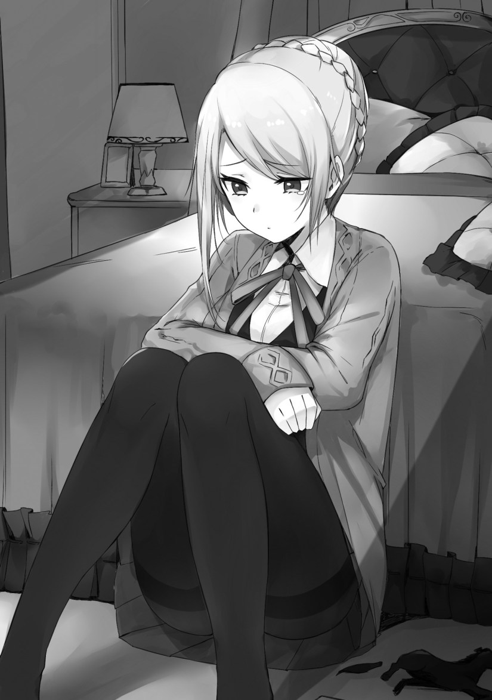

I had been thinking that I shouldn’t get involved with the otome game’s events.
It would have been fine for a mob to watch from a distance like a mob should. I thought that the story was unrelated to me, but things aren’t looking good now. I had a hunch that leaving things as they are would be dangerous, so I investigated some things myself.
Since Olivia’s the only girl from the advanced class that I’m closely acquainted with, I spoke to her.
In the library, I asked about Julian’s relation with Marie.
“I’m sorry. I don’t know the full details of it either. All I know is that at some point, all the girls turned cold towards Marie, but it calmed down now.”
“…Is there anything else you know? Have you made ever made contact with Marie?”
A girl has snatched away the position of the protagonist.
I had considered the possibility that this world has nothing to do with the game, and that I was just mistaken.
However, this doesn’t seem to be the case.
“I haven’t spoken with her before, but…I did encounter her a couple times. I went to the school library a few days after the school entrance ceremony, and that’s when I heard a voice call out to me.”
I understood from Olivia’s behavior that she didn’t really want to talk about the matter she was discussing, since she was casting her eyes downward while seeming sorrowful.
Yet, I wanted to know. It may be intrusive on Olivia’s feelings, but I’ll have to do at least this much to get information about Marie, the ominous woman.
“I want to know no matter what.”
Olivia lifted her head.
“…Leon, do you find people like Marie attractive?”
Judging from how embarrassed she looked, it seemed that she misunderstood this as being a discussion about love.
Being in love with her? Disgusting.
Olivia was surprised when she saw me make a repulsed expression.
“Huh?! That’s not it?”
“I don’t really like her.”
“I, is that so?”
Olivia thought for a bit, and then proceeded to talk about her relation with Marie.
“When I was thinking about looking into one of the library’s rooms, Marie showed up and told me to go away because I was being a nuisance. There was also a time where I saw her in the courtyard. I was similarly treated like an nuisance, so I thought that maybe it was something I did and asked her about it. When I did that, she said that she hated women like me.”
Olivia made a bitter smile.
So Marie hates Olivia?
There are a lot of girls that would hate a commoner for coming to a noble’s academy, but something feels odd about the part where she said that she hated women like her.
Olivia was worried while I remained silent.
We then heard some voices when us two had ceased talking.
“We’re doing it in a place like this?”
“It’s fine. Aren’t you and I the only two people here?”
It seemed like a jovial conversation between a boy and a girl. Judging from their delighted tone of voice…are these two lovers?
Wondering just who in the world would let such an envious development unfold here, I crouched down and wanted to check the behavior of those people.
“Leon, what are you doing?!”
Olivia cautioned me with a low voice, so I answered back in a low voice as well.
“Well, I’m just curious. Things like who’s getting intimate with who are important information for us. There’s also my curiosity. Now then, who is it that’s…?!”
Upon seeing what was there, Olivia seemed like she was going to unintentionally raise a voice, so I covered her mouth.
I held my breath and paid close attention on not making a noise.
There, a boy with purple hair…Brad, had embraced a small, delicate girl with blond hair.
Come to think of it, Brad was the character who’s often in the library.
Olivia was also taking a long, hard look at the situation.
Furthermore──the one that guy was kissing was Marie.
It was after school in a library room. The two were glued to each other, and they moved their arms around each other’s backs as they embraced one another. I never thought that I’d see such a strong kissing scene like this in the library room.
The two of us slowly left that spot and fled from the library room.
◇
Marie Fou Lafuan was on the way towards her dorm from the library room.
She recalled her sweet time with Brad, and traced her lips with her fingers.
“Hehe, this world really is the best. It’s splendid that there are few stupid boys like the ones in my previous world, and that this world rightly recognizes the rights of women.”
The school building was dyed orange from the evening sun.
While holding down the urge of wanting to skip and hop, she headed to the girls’ dorms.
“Julian and the others have even reprimanded the stupid boys that were bullying me and silenced them…this really is the best. Now that the bullying has stopped, my second school life will be fun~”
This world was Marie’s ideal world.
After all, she was in the position of where the protagonist should have been.
She embraced the illusion that the world revolved around her.
Just around the corner of the corridor in the academy building were the figures of Julian and Jilk. It seemed that they were looking for Marie.
“Marie, so you were here.”
The two approached her.
(These two are always together aren’t they. Could it be that they have that kind of relationship? I heard that even back then, homosexuality was a thing, so perhaps it’s that.)
While harboring cruel thoughts in her mind, she straightened herself and made a slight smile.
It was easy for Marie to act out the part of the ideal girl for these two, especially for Julian.
“You Highness, did something happen?”
Julian surprisingly gave her a warning.
“Stop using ‘your Highness.’ Julian is fine. I was talking with Jilk about this, but do you not have an exclusive servant?”
Marie nodded.
She then made herself look slightly embarrassed in front of the two.
“R, right. Actually…since my financial situation is tough, it’s hard for me to arrange an exclusive servant.”
(My parents don’t want to waste money. If possible, I would have wanted to reincarnate into a wealthy household)
Hiding the displeasure she had about her home, Jilk proposed something to the seemingly admirable Marie.
“In that case, his Highness and and I can cover the expenses. You’ll be lonely without an exclusive servant, Marie.”
In her mind, Marie made a triumphant pose towards the proposal and voiced her appreciation.
(With this, I will have a lover that I don’t need contraceptives for! There weren’t many girls who didn’t have one, so I was getting fairly concerned. All the same, this is a surprising world that lets women openly carry along lovers. Well, I’m glad about it so it doesn’t matter.)
On the inside, Marie was a little curious about the fact these two were going to give her a lover, but she went along with it while believing that this was how the world worked.
“Th, thank you. Your hi…Julian, Jilk.”
She made an embarrassed expression while saying Julian’s name, but beneath the surface, Marie was actually relieved.
Jilk guided Marie and Julian.
“Now then, shall we prepare a carriage and depart? Let’s head towards a prominent slave firm in the royal capital.”
◇
There were rooms in the girls’ dorms that were spacious and extravagant.
They were available for girls from well-established families of an earl rank or higher. Among them, there were some special rooms arranged for those who had connections with the royal family.
The room Anjelica used was one of those.
In the room, a girl who was one of her followers arrived.
“Anjelica, we cannot allow that woman. Isn’t his Highness purchasing a sub-race slave as a gift for her? You aren’t even allowed to own one, though.”
The girl couldn’t see the face of Anjelica, who was standing near a window.
Her expression was warped with bitterness.
“…Leave it be. If you understand the meaning of having a demi-human slave, then you know what kind of relationship he has with that girl.”
“B, but.”
Anjelica, a young duke woman, could purchase several tens of demi-human slaves considering the scale of her household.
However, she couldn’t do it precisely because she was the daughter of a Duke’s house. Above all, she held the position of being the fiancee for the crown prince.
She was a girl who would become the queen in the future, so having other lovers was no laughing matter.
After the girl left the room, Anjelica took a nearby object into her hands and threw it onto the floor as hard as she could.
“Stop fooling around! You’re…you’re getting so infatuated with an inconsequential girl! I’m──I’m doing this for your sake──just for your sake!”
It was easy to guess that Anjelica was rampaging from her outward appearance and her violent personality.
Just a while ago, the girls bullying Marie had been questioned by Julian and the others. They weren’t really told to, but they ended up spitting out Anjelica’s name.
The girls belonging to that group were not part of her followers, but had said that they were from the same group under the dicey situation they found themselves in.
It’s likely that they wanted to distract themselves from their everyday routine by bullying Marie, who had gotten carried away. Since girls were treated with importance in this society of nobles, there were many who didn’t show proper self-restraint.
However, cowering in front Julian and the others when being questioned, they blurted out Anjelica’s name.
Due to that, Anjelica was blamed by Julian and the others for Marie’s bullying. She denied her involvement, but they didn’t believe her.
After that, Anjelica’s position within the school weakened.
Now, there were an increasing number of girls that were trying to earn Marie’s favor.
There was also a group of boys that were approaching Marie, perhaps noticing what was happening around them. They mainly consisted of second or third sons, people who weren’t going to be heirs, that wanted to get closer to Julian and the others.
It was particularly obvious that the girls were now harboring ill feelings towards Anjelica.
“You say I ordered them? You have no proof of it, and yet you believe the words of that woman…”
What frustrated Anjelica was that Julian only believed in Marie’s words. He used the words of the bullies as a pretext to treat her like a wrongdoer.
It was unbearably frustrating for Anjelica.
A unity was made between the bullies and a group of people who were trying to empower themselves by spreading bad rumors about Anjelica and undermine her.
That much was still okay.
Anjelica didn’t mind such small things.
However, the words Julian had said was what hurt her heart.
‘We may be engaged, but at the academy, you’re just a student. Don’t interfere.’
──That’s what he said to her.
Anjelica shed tears and sat down where she was.

“I was…for his Highness…I was raised for the sake of his Highness! Only for the sake of his Highness!”
Anjelica loved Julian.
However, Julian didn’t love her back.
He only thought of it as a political marriage.
Ever since the engagement had been decided, Anjelica had worked hard. She pushed herself for Julian’s sake, but not an ounce of her work had been appreciated.
The one Julian wanted was a woman like Marie.
“Your Highness…why did you say that to me…why!”
She covered her face with both of her hands, and Anjelica continued to cry as her tears ran down.
punishment is necessary
Death is preferable to dishonor, but he has dishonored his fiancé so he must accept death.
Remember first chapters? How Prince’s useless ship keep blowing up in almost every single battle?
And I highly doubt that this Marie girl have tactical acumen to rival Teressa Testarrosa, especially if she is protagonist’s former sister, who sucks at any strategy but blackmail.
I don’t think that after triggering such number of dead flags there is any other future for the Prince.
And Angelica… Since she is a victim of slander like this, she probably going to be second waifu of MC (and he have big thick warship, that have no rivals here, even if we count weaponized islands).
Plus if really that marie is protagonist’s sister that a proof that she only cares only to create her own harem, don’t even know how to fight. That when our protagonist became “OP”.
The MC with Olivia talked to Anjelica in the illustrations so I guess yes? Or maybe not? I do not remember faces so just look it up.
“She probably going to be second waifu of MC (and he have big thick warship, that have no rivals here”…
You know how bad that does sound!? Hahahaha.
I’m kind of hoping this turns into a kingdom building series. The main guy takes the women who were burned by that witch Marie and with them in his own harem starts building a rival power with more balanced gender relations. One can dream but I get the feeling he’s going to end up working for the pre-existing countries of this shitty world.
Yes, I hope that at the final battle, MC with his harem and Marie with her Reverse-harrm will battle
While I like the kingdom building idea, I think you failed to realize the inherent power inequalities in a harem. A truly more balanced gender circumstance would be one where harems did not exist.
This novel does a great job of illuminating the horrendous feeling of being part of a harem or a secondary lover, and we shouldn’t wish this on anyone – man or woman.
Well in normal situation it’s good.
Thanks for the chapter.
Okay. Now i am convinced. Maria is reincarnated into Marie. Their bitchiness is outrageously similar. Capturing boys left and right. Sleeping with them like prostitutes. Slandering the villainess. Trying to become queen in the new world. And now i remember Celes. She is like that too. But she is genuine resident of the world and no game like setting. I liked the author make Marie into a loli. If she is a bombshell, i would feel “its a shame that body is wasted by killing her”. On the other hand Olivia and Anjelica are superb. I see the author is a man of culture as well. Carefully writing while considering his preferences.
Agreed!
That’s what he said to her.
Let’s call the FFF to execute Marie
And the Prince while we’re at that. He got girls wanting his D so death punishment to heretic like him is necessary.
Is the FFF = fantastic fucking four
KKK
Welp, she(Angelica) will be NTR by Leon after this arc right?
After all Leon snapped when the bitch(Marie) actually will make a move openly right.
Thanks for your great work.
Oh, Angelica situation remind me with certain princess with pink hair who her fiance charmed by certain bitch
And also reminded me with a story of Daughter of Duke with white hair and blue dress too. (Common sense of Duke Daughter)
By the way, what is the meaning of having the Prince bought Marie that servant..?
It means The Crown Prince is an idiot.
It probably has some significance related to physical relationships (i.e. sexual intercourse) considering high-ranking daughters aren’t allowed one. It might well be that there might be more to the fact that demi-humans can’t interbreed with humans (noted several times, including by Marie when she commented that she doesn’t have to worry about contraception if she gets one); maybe their ‘body fluids’ work as a contraceptive, meaning if you have a slave, it’s ok to bang without worrying about pregnancy.
Marie hates people like Olivia?
Lol. The faker projecting her own promiscuous intentions towards the genuine Nice girl. She deserves to be exposed.
I hope that the ‘slave-servant’ Marie is being gifted is female or else it’ll confirm that the harem posse are a bunch of ungrateful maso~cucks. The prince fiancee is denied male servants to ensure royal lineage So they can’t be that ignorant of nobel ladies sleeping around.
It’s been mentioned several times that demi-human slaves won’t produce children with humans. With what was said this chapter, there’s a possibility that something about them (maybe ‘bodily fluids’) works as a moderate term contraceptive (like taking the pill), meaning a girl who regularly ‘uses’ her slave won’t get pregnant, and as such the Prince buying Marie a slave is somewhat akin to buying her contraceptives, hence the ‘relationship’ between the two alluded to by Anjelica this chapter.
That is not any better for the prince harem posse since It indicates:
1) an embrace of hedonism (reverse harem) while spurning any responsibility of trying to birth an heir. OR
2) taking the fiancee for granted (child rearing)…..What a terrible role model.
Following standards otome game villain novel, Angelica will expelled and banished from her house that’s the cue for Rion to make a move
Another prince that needed to get his ass handed to him. In a hard way
Man, this is definitely giving me Sevens vibe LOL.
Thanks for the chapter
Lol but there is no magnificent lyle like character
Yes, this author really has a thing for evil little sisters, well at least this time the little sister is just a really good heartless manipulative and selfish liar, not a humanity hater overpowered evil goddes
Thx for the Chapter~!!
(´｡• ω •｡`)
I read ahead in the raws. This is nothing like how I pictured Anjelica (who gets translated as “Angers” lol).
No spoilers, but keep in mind that this isn’t an otome game but it it is a standard isekai — its all about power fantasies. Nothing and no one will be able to compete with Leon.
Thanks for the chapter!!!! I wonder whether anyone else wondered whether Olivia was getting worried about Leon liking Marie due to thinking she might not have a chance of becoming a concubine if he marries Marie. lol. Olivia is smart, so I would be surprised if she never considered the possibility.
As for Marie herself, she really demonstrates the slutty behavior of the lower nobles. In fact, this just shows how corrupt and distorted the Kingdom really is, since I am sure that a majority of the world can see how many female nobles threw away their chastity and honor for decadence and lust. With such distorted morals, I can see why the kingdom suffers so badly against enemy attacks when playing the game. I am just surprised that most of the families are still functional when seeing how people like Marie are among them……sigh, Olivia along with the high nobility and plebeians are our only saving grace.
That would actually make sense. Since all the males do the work in this world then this would mean years of anger and frustrations from lower nobility who end up as soldiers, researchers, and engineers have grown increasingly dissatisfied with both work and home.
Truer still if the age difference led to the despair of many of them.
This has likely caused andecline in the kingdom’s development and no one would notice cause the lower caste will have no voice to give as higher nobility not only take credit but may even smugly oder them around more.
Thanks for the chapter!
some suggestions and corrections to make the flow better..:)
Olivia was surprised when seeing me make a repulsed expression. –> Olivia was surprised when she saw me make a repulsed expression.
Well, I’m just curious Things like who’s getting intimate with who are important information for us –> Well, things like who’s getting intimate with who are important information for us
Upon us seeing what was there, Olivia seemed like she –> Upon seeing what was there, Olivia seemed like she
Come to think of it, Brad is character that’s often in the library. –> Come to think of it, Brad was the character who’s often in the library.
I never thought that I’d see such a strong kiss scene like this in the library room –> I never thought that I’d see such a strong kissing scene like this in the library room
Us two slowly left that spot –> The two of us slowly left that spot
Julian gave her surprising warning. –> Julian surprisingly gave her a warning.
(With this, I have a lover that I don’t need contraceptives for! –> (With this, I will have a lover that I don’t need contraceptives for!
However, she couldn’t do it precisely because she’s the daughter of a duke house. Above all, she holds the position of being the fiance for the crown prince. –> However, she couldn’t do it precisely because she was the daughter of a Duke’s house. Above all, she held the position of being the fiancee for the crown prince.
She’s a girl who will become the queen in the future, so her having other lovers is no laughing matter. –> She was a girl who would become the queen in the future, so having other lovers was no laughing matter.
Since girls are treated with importance in this society of nobles, there are many that don’t show proper self-restraint. –> Since girls were treated with importance in this society of nobles, there were many who didn’t show proper self-restraint.
second or third sons, people that weren’t going to be heirs, –> second or third sons, people who weren’t going to be heirs,
That’s what he said to him –> was what he said to her
She pushed herself for the intent of Julian –> She pushed herself for Julian’s sake
Thanks for the suggestions/corrections
Thank you for the post.
Angelica had the power to end the engagement with the Prince and damage his reputation. Love is blind.
So that’s the back story of Anjelica like yeah she loves him, but it’s kinda messed up too because her family is using her as tool when they raised her just to marry the prince. While from a player perspective of playing the game you just know she’s a rival and bitchy and that’s it.
Tbh i thought i would hate Anjelica .. but turns out she’s my candidate#1 waifu… cuz i like her hair more than Oliva
Somehow i get the feeling that anjelica is going to be leon’s wife while olivia is going to be his mistress.
Welp…. as seen in the first chapter the ship in which the prince is gets blown away every time… so… it’s not a great future for him.. atleast if that Marie girl doesn’t have something up her sleeve but she could have something…… and MC should actually make use of his time to learn some new skills here……
I see a lot of Akuyaku reijo ni koi shite in this chapter
There’s Marie as Maria;
There’s Angelica as Charlotte;
There’s Julian as Arnold;
A supposedly mob character Leon as Rion, not as much but in title though;
And many more to come…..
Thanks for the chapter!
plot twist: Marie is actually Leon’s sister from the previous life. dun dun dunnnn
Arturia best waifu <3
Ahhh no need to worry, Angelica, you deserves a 100x better man soon! *stares at Leon*